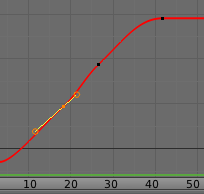
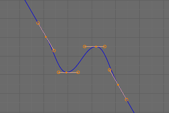
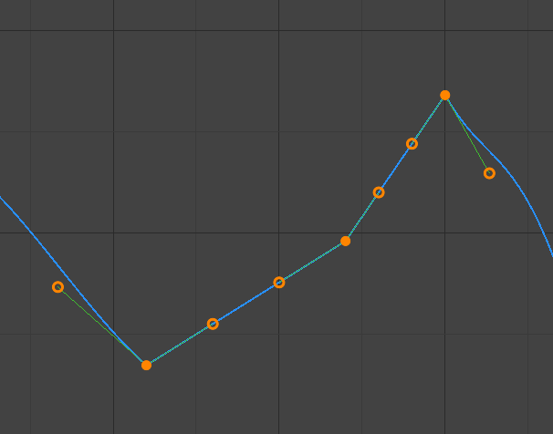
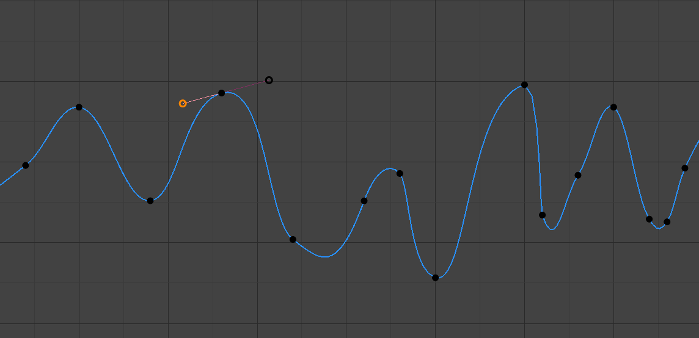

Introduction¶
After animating some property in Blender using keyframes you can edit their corresponding curves. When something is “animated”, it changes over time. This curve is shown as something called an F-curve. Basically what an F-curve does is an interpolation between two animated properties. In Blender, animating an object means changing one of its properties, such as the object’s location, or its scale.
As mentioned, Blender’s fundamental unit of time is the “frame”, which usually lasts just a fraction of a second, depending on the frame rate of the scene. As animation is composed of incremental changes spanning multiple frames, usually these properties are not manually modified frame-by-frame, because:
- It would take ages!
- It would be very difficult to get smooth variations of the property (unless you compute mathematical functions and type a precise value for each frame, which would be crazy).
This is why nearly all direct animation is done using interpolation.
The idea is simple: you define a few Keyframes, which are multiple frames apart. Between these keyframes, the properties’ values are computed (interpolated) by Blender and filled in. Thus, the animators’ workload is significantly reduced.

Example of an interpolation.
For example, if you have:
- A control point of value 0 at frame 0,
- another one of value 10 at frame 25,
- and you use linear interpolation, then, at frame 5 we get a value of 2.
The same goes for all intermediate frames: with just two points, you get a smooth increase from (0 to 10) along the 25 frames. Obviously, if you would like the frame 15 to have a value of 9, you would have to add another control point (or keyframe)…
Direction of Time¶
Although F-curves are very similar to Bézier, there are some important differences.
For obvious reasons, a property represented by a curve cannot have more than one value at a given time, hence:
- When you move a control point ahead of a control point that was previously ahead of the point that you are moving, the two control points switch their order in the edited curve, to avoid that the curve goes back in time.
- For the above reason, it is impossible to have a closed F-curve.

Before moving the second keyframe. |

After moving the second keyframe. |
Settings¶
F-Curves have three additional properties, which control the interpolation between points, extension behavior, and the type of handles.
Interpolation Mode¶
Reference
| Menu: | |
|---|---|
| Hotkey: | T |
Mode for the Interpolation between the current and next keyframe.
Interpolation¶
- Constant
There is no interpolation at all. The curve holds the value of its last keyframe, giving a discrete (stairway) “curve”. Usually only used during the initial “blocking” stage in pose-to-pose animation workflows.
- Linear
This simple interpolation creates a straight segment, giving a non-continuous line. It can be useful when using only two keyframes and the Extrapolation extend mode, to easily get an infinite straight line (i.e. a linear curve).
- Bézier
The more powerful and useful interpolation, and the default one. It gives nicely smoothed curves, i.e. smooth animations!

Bézier.
{kind=link}
{kind=link}
Note
Remember that some F-curves can only take discrete values, in which case they are always shown as if constant interpolated, whatever option you chose.
Easing (by strength)¶
Different methods of easing interpolations for F-curve segment. The “Robert Penner easing equations” (basically, equations which define some preset ways that one keyframe transitions to another) which reduce the amount of manual work (inserting and tweaking keyframes) to achieve certain common effects. For example, snappy movements.
- Linear
- Sinusoidal
- Quadratic
- Cubic
- Quartic
- Quintic
- Exponential
- Circular
See also
For more info and a few live demos, see http://easings.net and http://www.robertpenner.com/easing/
Dynamic Effects¶
These additional easing types imitate (fake) physics-based effects like bouncing/springing effects. The corresponding settings can be found in the .
- Elastic
Exponentially decaying sine wave, like an elastic band. This is like bending a stiff pole stuck to some surface, and watching it rebound and settle back to its original state.
- Amplitude
- The amplitude property controls how strongly the oscillation diverges from the basic curve. At 0.0, there is no oscillation (i.e. it just snaps to the B-value like an extreme exponential transition), and at 1.0 a profile similar to the one shown in the icon occurs.
- Period
- The period property controls the frequency with which oscillations occur. Higher values result in denser oscillations.
- Bounce
- Exponentially decaying parabolic bounce, like when objects collide. e.g. for Bouncing balls, etc.
- Back
Cubic easing with overshoot and settle. Use this one when you want a bit of an overshoot coming into the next keyframe, or perhaps for some wind-up anticipation.
- Back
- The back property controls the size and direction (i.e. above/below the curve) of the overshoot.
Easing Type¶
Reference
| Menu: | |
|---|---|
| Hotkey: | Ctrl-E |
The Easing Type controls which end of the segment between the two keyframes that the easing effects apply to.
- Automatic Easing
- The most commonly expected of the below behaviors is used. For the transitional effects, this is basically ease in, while for the physics effects it is ease out.
- Ease In
- Effect builds up to the second keyframe.
- Ease Out
- Effect fades out from the first keyframe.
- Ease In Out
- Effect occurs on both ends of the segment.
Extrapolation¶
Reference
| Menu: | |
|---|---|
| Hotkey: | Shift-E |
Extrapolation defines the behavior of a curve before the first and after the last keyframes.
There are two basic extrapolation modes:
- Constant
The default one, curves before their first keyframe and after their last one have a constant value (the one of these first and last keyframes).

Constant extrapolation.
- Linear
Curves ends are straight lines (linear), as defined by their first two keyframes (respectively their last two keyframes).
Linear extrapolation.
{kind=link}
Additional extrapolation methods (e.g. the Cycles modifier) are located in the F-Curve Modifiers.
Handle Types¶
There is another curve option quite useful for Bézier-interpolated curves. You can set the type of handle to use for the curve points V.
- Automatic
Keyframes are automatically interpolated.

Auto handles.
- Vector
Creates linear interpolation between keyframes. The linear segments remain if keyframe centers are moved. If handles are moved, the handle becomes Free.
Vector handles.
- Aligned
Handle maintain rotation when moved, and curve tangent is maintained.
Aligned handles.
- Free
Breaks handles tangents.

Free handles.
- Auto Clamped
Auto handles clamped to not overshoot.

Auto clamped handles.
{kind=link}
{kind=link}